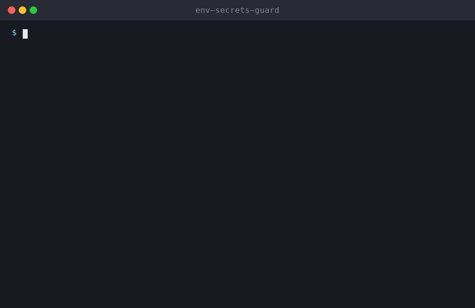

🔐 env-secrets-guard
Find leaked API keys and secrets before they hit GitHub. A free, open-source Agent Skill for Claude Code, Cline, Cursor, Codex and 75+ AI agents.

Install env-secrets-guard
# Claude Code (all 48 skills)
/plugin install all-skills --marketplace milad-ahmd/agent-skills
# Cursor, Codex, Cline, Windsurf, Copilot + 75 more agents
npx skills add milad-ahmd/agent-skills --skill env-secrets-guard
# Shell installer
curl -fsSL https://raw.githubusercontent.com/milad-ahmd/agent-skills/main/install.sh | bash -s -- env-secrets-guardIncluded in packs: startup-cto-pack, developer-pack
What to say to your agent
Scan this repo for leaked secrets before I pushI'm open-sourcing this repo, is it safe?
When it triggers
Scans a repository and its git history for leaked secrets (API keys, tokens, passwords, private keys), fixes .gitignore and env handling, and guides safe key rotation. Use before pushing, before open-sourcing a repo, or when the user asks to check for leaked keys or secrets.
Full skill instructions (SKILL.md)
Env Secrets Guard
Stop secrets from leaving the machine, and clean up properly if they already have.
1. Scan
Run the bundled scanner first. It needs only Python 3 and never prints full secret values:
python3 scripts/scan_secrets.py . # tracked files
python3 scripts/scan_secrets.py . --history # + every commit in git historyFor deeper coverage, also use a dedicated scanner if one is installed:
gitleaks detect --source . --redact -v # working tree + history
trufflehog git file://. --only-verified # verified live secretsOtherwise, search manually (working tree and history):
git grep -nIE '(AKIA[0-9A-Z]{16}|sk-[A-Za-z0-9_-]{20,}|ghp_[A-Za-z0-9]{36}|github_pat_[A-Za-z0-9_]{50,}|xox[baprs]-[A-Za-z0-9-]+|AIza[0-9A-Za-z_-]{35}|sk_live_[0-9a-zA-Z]{24,}|-----BEGIN [A-Z ]*PRIVATE KEY-----)'
git log -p --all -S 'PRIVATE KEY' --oneline | head -50
git ls-files | grep -iE '(^|/)\.env(\..*)?$|\.pem$|\.p12$|\.keystore$|id_rsa|credentials|service-account.*\.json'Also check: hard-coded password=/secret=/token= values, connection strings with credentials embedded, google-services.json/GoogleService-Info.plist and mobile signing files.
2. Report (never print full secrets)
Show at most the first 4 characters followed by ****, plus the file:line and, for history hits, the commit. Classify each hit: 🔴 live credential · 🟠 likely real · 🟢 test/example/placeholder.
3. Fix
- Move the values into environment variables or a secret manager, and load them through the project's existing config pattern.
- Add a
.env.examplewith variable names and empty values. Add.env*(except the example) and key files to.gitignore. - Untrack committed files without deleting them locally:
git rm --cached <file>.
4. If a secret was ever pushed
- Rotate or revoke the key first. History rewriting does not un-leak a key that has already been pushed.
- Only then, if the user wants it, rewrite history with
git filter-repoor BFG. Explain that this requires a force-push and that every collaborator must re-clone. Never force-push without explicit confirmation.
5. Prevent
Offer to add a pre-commit hook (for example gitleaks protect --staged) and a CI secret-scanning step.
Rules
- Never print, log or commit full secret values. Always redact them.
- Rotate first, clean up second. Never force-push or rewrite history without explicit confirmation.
- Treat anything ambiguous as real until the user confirms it's a placeholder.
View source on GitHub ⭐ Star the collection
Related skills
🩺 dependency-doctor
Audit vulnerable, outdated and unused packages with a safe upgrade plan
🛡️ gh-actions-auditor
Find pwn requests, script injection and unpinned actions in GitHub Actions, then fix them
🪤 prompt-injection-scanner
Scan skills, CLAUDE.md, hooks and MCP configs for prompt injection and hidden instructions